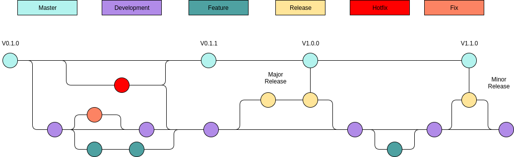

Introduction
Git
Commit Flow

At nodeflux we have 2 branch default branch master and development.
Feature branch if we want to add new feature.
Release branch create when master already full tested.
Hotfix branch create when fixing bug on master (MINOR Version ex: 1.1.1 -> 1.1.2)
About Versioning: https://semver.org/
Feature Branch Management
with JIRA
How To Create Feature Branch With Jira :
- Step 1 -> select create branch from jira
- Step 2 ->branch name naming convention follow the jira made
(Project Name-Title Name ex: SD-711-fr-show-page-without-cctv-streame)
note: please choose branch from development - Step 3 -> Terminal
Access Feature Branch
git fetch --all
git checkout <branchname-createdfromjira>
Commit Message Rule
Rule for commit message:
- Please use git commit without -m
- Separate Title from body with a blank line
- Limit the subject line to 50 characters
- Capitalize the subject line
- Do not end the subject line with a period
- Use the imperative mood in the subject line
- Wrap the body at 72 characters
- Use the body to explain what and why for detail: https://chris.beams.io/posts/git-commit/
commit message template
# <type>: (If applied, this commit will...) <subject> (Max 50 char)
# |<---- Using a Maximum Of 50 Characters ---->|
# Explain why this change is being made
# |<---- Try To Limit Each Line to a Maximum Of 72 Characters ---->|
# Provide links or keys to any relevant tickets, articles or other resources
# Example: Github issue #23
# --- COMMIT END ---
# Type can be
# feature (new feature)
# fix (bug fix)
# refactor (refactoring production code)
# style (formatting, missing semi colons, etc; no code change)
# docs (changes to documentation)
# test (adding or refactoring tests; no production code change)
# chore (updating grunt tasks etc; no production code change)
# --------------------
# Remember to
# Capitalize the subject line
# Use the imperative mood in the subject line
# Do not end the subject line with a period
# Separate subject from body with a blank line
# Use the body to explain what and why vs. how
# Can use multiple lines with "-" for bullet points in body
# --------------------
# For more information about this template, check out
# https://gist.github.com/adeekshith/cd4c95a064977cdc6c50
To apply the template,
Save the above file to your local machine and use
git config --global commit.template <.git-commit-template.txt file path>
For example, if you saved it to your home folder, try:
git config --global commit.template ~/.git-commit-template.txt
Pull Request Management
Release Branch Management
Rule Access Control
Other Technique for git
for revert the commit but not at remote
$ git reset --soft HEAD~ # back to before commit
$ git reset HEAD . # back the before git add / before phase ready to commit
Python
Development Workflow
Directory Structure
Example of a package structure.
packagename
docs
examples
nodeflux
__init__.py
packagename
__init__.py
yourmodule.py
othermodule.py
tests
__init__.py
packagename
__init__.py
test_yourmodule.py
test_othermodule.py
.gitignore
bitbucket-pipelines.yml
LICENSE
Pipfile
Pipfile.lock
README.md
RELEASE.md
requirements.txt
setup.py
Those structure allow standardized import from
nodefluxnamespace. For example:
from nodeflux.logger import Logger
A clean, structured project directory is one of the key to the project's maintainability.
A module or package must live inside the nodeflux directory. It allows a standardized import from the nodeflux namespace.
Project Properties
| Location | Purpose |
|---|---|
./.gitignore |
List of file name patterns to be ignored by git. |
./bitbucket-pipelines.yml |
Bitbucket pipeline configuration file. |
./LICENSE |
Full text of the license of this package. |
./README.md |
Overview of the package. |
./RELEASE.md |
Lists every release and it's changelog on each version. |
Dependencies and Setup Script
| Location | Purpose |
|---|---|
./Pipfile |
List of project requirements generated by pipenv. |
./Pipfile.lock |
Locked requirements to make a deterministic build. |
./requirements.txt |
List of dependencies. Should be frozen by pipenv. |
./setup.py |
Script to build and install the package. |
Modules and Package
| Location | Purpose |
|---|---|
./nodeflux/packagename/ |
If there's more than one module, put all modules in this directory. |
./nodeflux/yourmodule.py |
If there's only one module, put it directly on ./nodeflux directory. |
Documentations and Example
| Location | Purpose |
|---|---|
./docs/ |
Package reference documentation. |
./examples/ |
Usage example of the package. |
Test Suites
| Location | Purpose |
|---|---|
./tests/packagename |
If there's more than one module, put the package's test cases in this directory. |
./tests/test_yourmodule.py |
If there's only one module, put it's test cases directly in ./tests directory. |
Dependency Management
Inside the Pipfile. All of these are generated automatically by
pipenv.
[[source]]
url = "https://pypi.python.org/simple"
verify_ssl = true
name = "pypi"
[packages]
fire = "*"
logger = {git = "https://bitbucket.org/verysmartdonkey/nodeflux-logger-python"}
[dev-packages]
pylint = "*"
pytest = "*"
[requires]
python_version = "3.6"
This way we can install all dependencies with
$ pipenv install
which read or generate a
Pipfile.lockto make sure the installation is deterministic.
The most common dependency management for python is the use of requirements.txt file, which can be installed with pip install -r requirements.txt. Unfortunately, this simple solution is prone to many problems. Installation with requirements.txt is non deterministic. Depending on the content of the requirements.txt, an installation cannot be guaranteed to have the same version with the previous, tested installation. Furthermore, most of the time we need to manually add the dependencies to the requirements.txt file.
Installing packages into global site-packages is not a good practice. Some common problem we face is version clashing and permission (requires sudo to install a package). The best practice is to use virtual environment for each project. It allows a project to isolate itself from other projects and use different version of dependency.
Pipenv is a packaging tool that aims to solve those problems. It automatically creates and manages a virtual environment for your project, as well as adds or removes packages to a Pipefile as you install or uninstall packages. It has a Pipfile.lock, which is used to produce deterministic installation. It also able to separate development packages from the production packages.
First, install pipenv with pip install pipenv.
Here's a cheat sheet of the pipenv as a dependency manager:
- Specify Python version for the virtual environment:
pipenv --python 3.6. If not specified, it will use the version of the default Python. - Install a package:
pipenv install <packagename>. - Install a development package:
pipenv install --dev <devpackagename> - Install from a git repository
pipenv install git+https://bitbucket.org/verysmartdonkey/nodeflux-logger-python#egg=logger - Install production dependencies from the
Pipfile:pipenv install - To install dependencies from the
Pipfilealong with the development packages:pipenv install --dev - Run a command from the virtual environment:
pipenv run <command> - Spawn a shell with the virtual environment activated:
pipenv shell - Generate a
requirements.txtfrom thePipfile.lock:pipenv lock -r
You must use pipenv to manage your dependencies and virtual environment, and you must separate production and development packages.
Setup Script
Setup script example.
from setuptools import setup
setup(
name='nflogger',
version='0.1.1',
description='Nodeflux Standard Logger',
url='https://bitbucket.org/verysmartdonkey/nodeflux-logger-python',
author='Ilham Imaduddin',
author_email='ilham@nodeflux.io',
packages=['nflogger'],
zip_safe=False)
With this build script, we can easily install the library with
pip.
# From local repository
pip install .
# From remote repository
pip install -e git+https://bitbucket.org/verysmartdonkey/nodeflux-logger-python#egg=nflogger
When we create a package, we're not only responsible to make the package works, but we also responsible to make the installation process as easy as possible.
The most common way to install python package is pip. To make pip works, we need to make the setup script in the setup.py file. See the details in Python documentation Writing the Setup Script.
After the setup script is ready, we can install the package with pip install . (or pip install -e . to make it editable while developing the package).
You must to create a setup script for every package that designed to be reusable. An installation with pip install should installs all package components, including dependencies, extensions and package data.
Lint
Run pylint againts your code.
pylint ./tests
Pylint is a tool for finding bugs and style problems in Python source code. It finds problems that are typically caught by a compiler for less dynamic languages like C and C++. Because of the dynamic nature of Python, some warnings may be incorrect; however, spurious warnings should be fairly infrequent.
You must use pylint to analize your code.
To make the most of pylint, use an extension that supports pylint on your text editor/IDE:
- Visual Studio Code: Python Extension
- Sublime Text: Anaconda
Pros
Catches easy-to-miss errors like typos, using-vars-before-assignment, etc.
Cons
pylint isn't perfect. To take advantage of it, we'll need to sometimes: a) Write around it b) Suppress its warnings or c) Improve it.
Formatting
Compatibility
An example of
__future__import to improve Python 2 and 3 compatibility.
from __future__ import print_function
print('Hello, World')
This works on both Python 2 and 3.